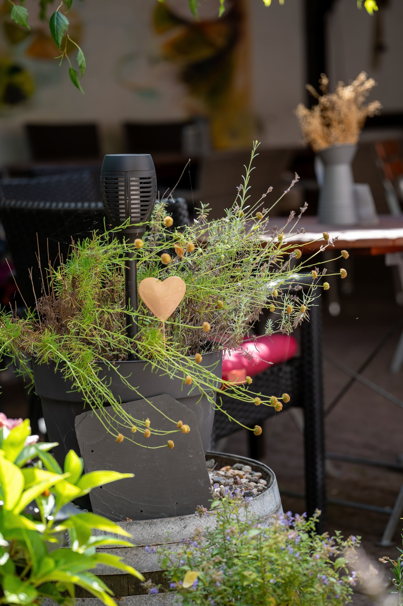

Creating a beautiful garden from scratch starts with observation and planning rather than immediate shopping. A functional layout, plants suited to the site, durable paths, balanced heights, appropriate watering, and realistic maintenance can transform an empty outdoor area into a coherent garden that improves over time.
Observe the Space Before Designing
Record direct sun, shade, drainage, wind, important views, and existing routes before buying plants or building paths. These conditions determine which ideas are realistic.
Walk the site as you normally use it and mark doors, gates, taps, storage, and areas that must remain accessible.
Take measurements and make a simple sketch. Accurate dimensions prevent expensive mistakes with furniture, beds, and mature plant sizes.
Divide the Garden According to Use
Decide whether the garden needs space for relaxing, dining, play, pets, food growing, storage, entertaining, or primarily planting.
Prioritize the functions you will actually use. Trying to include every possible feature can make a modest property feel crowded.
Keep important routes direct and comfortable, building the functional structure before adding decoration.
Define a Simple Visual Direction
A clear visual idea helps plants and materials feel connected. Choose a broad direction that suits the house, climate, and your preferences.
Use reference images as inspiration rather than rigid plans. Your site's conditions should shape the result.
Repeat a limited number of materials, colors, and forms to create continuity.
Select Plants Compatible With the Site
Choose plants for actual sunlight, soil, drainage, climate, mature size, and maintenance needs rather than appearance at the nursery.
A well-adapted plant usually needs fewer corrections and has a better chance of staying healthy.
Research mature height and width before planting and leave enough space for development.
Work With Heights and Focal Points
Trees, shrubs, perennials, grasses, and groundcovers can create depth when their mature dimensions suit the site.
Place taller elements where they will not block important windows, views, or circulation.
Use focal points sparingly. One strong specimen plant, bench, pot, sculpture, or view can be more effective than many competing objects.
Choose Durable Paths and Materials
Main routes need stable, comfortable surfaces, while occasional paths may use simpler solutions. Choose materials according to climate, drainage, slip resistance, maintenance, and budget.
Prepare bases and edges correctly for the selected material. Permanent work should follow local requirements.

Limit unrelated materials in a small garden so the design does not become visually fragmented.
Plan Drainage and Soil Early
Observe where water flows and collects during rain. Serious drainage problems should be addressed before expensive planting or paving.
Do not redirect runoff toward foundations or neighboring property. Complex problems may need professional assessment.
Understand the existing soil before adding amendments. Different planting areas may require different approaches.
Design Irrigation Around Plant Needs
Decide how new plants will be watered before installation. Newly planted areas often need closer attention during establishment.
Group plants with similar moisture needs when practical. This makes watering easier and avoids conflicting requirements.
Inspect irrigation periodically for leaks, blocked outlets, overspray, and changing plant needs.
Use Repetition for Cohesion
Repeating selected plants, colors, materials, or shapes gives the garden rhythm and makes separate areas feel connected.
Repetition does not require perfect symmetry. Groups can vary in size while sharing recognizable elements.
Leave some visual breathing room so repeated features remain noticeable.
Balance Permanent Structure and Seasonal Interest
Include plants or hardscape elements that provide structure outside peak flowering periods.
Seasonal flowers, foliage, fruit, bark, seed heads, and grasses can add change throughout the year.
Imagine the garden in less colorful seasons before finalizing the planting plan.

Make Small Gardens Feel More Spacious
Keep circulation clear and avoid filling every boundary with bulky objects. Visible ground and controlled planting make compact gardens easier to read.
Use vertical surfaces and layered planting to add depth without consuming all usable floor area.
Choose fewer appropriately scaled features instead of many miniature elements.
Design Comfortable Seating
Test seating locations with temporary chairs before constructing a permanent area. Evaluate sun, shade, wind, privacy, and views.
Allow enough room to pull chairs out and move around tables. Use real furniture dimensions during planning.
Choose outdoor furniture and shade solutions suited to local weather.
Use Lighting Carefully
Outdoor lighting should first make entrances, paths, steps, and level changes safer after dark.
Low-intensity accent lighting can highlight selected plants or structures without flooding the entire garden.
Use outdoor-rated equipment and follow applicable requirements for fixed electrical work.
Consider Privacy Early
Privacy can come from planting, screens, fences, walls, or orientation changes, depending on the property and local rules.
Account for the mature size of screening plants and the time they need to grow.
Partial screening may preserve more light and make a small space feel less enclosed than a solid barrier.
Plan for Future Maintenance
Every design creates maintenance. Lawns need mowing, hedges need trimming, plants need care, and surfaces require cleaning or repair.

Match the design to the time and budget you can realistically provide.
Leave physical access for pruning, watering, cleaning, and moving equipment.
Build in Stages
Phased work controls costs and lets you discover design problems before repeating them across the site.
Start with drainage, essential infrastructure, main paths, major planting, and the most important use areas.
Live with each stage before adding more and remember that plants need time to mature.
Review Views From Inside the House
The garden is often seen through windows for more hours than it is occupied. Check important views from living areas, kitchens, bedrooms, and entrances.
Place attractive structure or planting where it improves those views without blocking necessary daylight.
This connection can make both the interior and exterior feel more intentional.
Create a Practical Planting Plan
List plants by mature size, flowering period, light needs, moisture needs, and quantity before visiting a nursery.
This prevents impulse purchases that have no suitable location and helps you estimate the real cost of the project.
Leave room for future additions rather than filling every bed immediately.
Protect Existing Useful Features
Mature healthy trees, established shrubs, good soil, existing paths, and useful walls may already provide valuable structure.
Do not remove established elements merely because a reference image looks different. Evaluate their condition and function first.
Working with useful existing features can reduce cost, waste, and the time required for a new garden to feel established.
Let the Garden Mature
New gardens rarely look finished immediately. Plants need time to establish and fill their intended spaces.
Do not overplant only to create instant fullness, because crowding can create future competition and maintenance.
Photograph the garden periodically and make small corrections as it develops.
Frequently Asked Questions
What should I do first?
Observe and measure the site. Understand sunlight, shade, drainage, wind, access, existing features, and how the garden needs to function.
How can I make the design cohesive?
Repeat a limited palette of plants, materials, colors, or forms and keep a simple overall visual direction.
Should I buy all plants at once?
Not necessarily. Phased planting lets you observe conditions, control spending, and adjust as the garden develops.
How do I choose plants?
Match plants to climate, light, soil, moisture, mature size, and the maintenance you can realistically provide.
Can a beautiful garden be created on a limited budget?
Yes. Prioritize layout, healthy appropriate plants, clear paths, soil preparation, and gradual improvements before decorative extras.
Conclusion
A beautiful garden is the result of compatible decisions working together. Observe the site, define how it will be used, choose a simple visual direction, select plants for the real conditions, and plan paths, drainage, watering, seating, privacy, and maintenance. Build in stages and allow plants time to mature so the garden remains attractive and practical for years.
Review the Garden After Each Season
At the end of a season, note which areas were comfortable, which plants performed well, where water or circulation caused problems, and which maintenance tasks took more time than expected. This review turns everyday experience into practical design information.
Make small corrections first. Moving a container, widening access, replacing one unsuitable plant, or simplifying a demanding bed may solve more than a complete redesign.
Review the Garden After Each Season
At the end of a season, note which areas were comfortable, which plants performed well, where water or circulation caused problems, and which maintenance tasks took more time than expected. This review turns everyday experience into practical design information.
Make small corrections first. Moving a container, widening access, replacing one unsuitable plant, or simplifying a demanding bed may solve more than a complete redesign.
Review the Garden After Each Season
At the end of a season, note which areas were comfortable, which plants performed well, where water or circulation caused problems, and which maintenance tasks took more time than expected. This review turns everyday experience into practical design information.
Make small corrections first. Moving a container, widening access, replacing one unsuitable plant, or simplifying a demanding bed may solve more than a complete redesign.
Review the Garden After Each Season
At the end of a season, note which areas were comfortable, which plants performed well, where water or circulation caused problems, and which maintenance tasks took more time than expected. This review turns everyday experience into practical design information.
Make small corrections first. Moving a container, widening access, replacing one unsuitable plant, or simplifying a demanding bed may solve more than a complete redesign.
Review the Garden After Each Season
At the end of a season, note which areas were comfortable, which plants performed well, where water or circulation caused problems, and which maintenance tasks took more time than expected. This review turns everyday experience into practical design information.
Make small corrections first. Moving a container, widening access, replacing one unsuitable plant, or simplifying a demanding bed may solve more than a complete redesign.
Review the Garden After Each Season
At the end of a season, note which areas were comfortable, which plants performed well, where water or circulation caused problems, and which maintenance tasks took more time than expected. This review turns everyday experience into practical design information.
Make small corrections first. Moving a container, widening access, replacing one unsuitable plant, or simplifying a demanding bed may solve more than a complete redesign.
Review the Garden After Each Season
At the end of a season, note which areas were comfortable, which plants performed well, where water or circulation caused problems, and which maintenance tasks took more time than expected. This review turns everyday experience into practical design information.
Make small corrections first. Moving a container, widening access, replacing one unsuitable plant, or simplifying a demanding bed may solve more than a complete redesign.
Review the Garden After Each Season
At the end of a season, note which areas were comfortable, which plants performed well, where water or circulation caused problems, and which maintenance tasks took more time than expected. This review turns everyday experience into practical design information.
Make small corrections first. Moving a container, widening access, replacing one unsuitable plant, or simplifying a demanding bed may solve more than a complete redesign.
Review the Garden After Each Season
At the end of a season, note which areas were comfortable, which plants performed well, where water or circulation caused problems, and which maintenance tasks took more time than expected. This review turns everyday experience into practical design information.
Make small corrections first. Moving a container, widening access, replacing one unsuitable plant, or simplifying a demanding bed may solve more than a complete redesign.
Review the Garden After Each Season
At the end of a season, note which areas were comfortable, which plants performed well, where water or circulation caused problems, and which maintenance tasks took more time than expected. This review turns everyday experience into practical design information.
Make small corrections first. Moving a container, widening access, replacing one unsuitable plant, or simplifying a demanding bed may solve more than a complete redesign.
Review the Garden After Each Season
At the end of a season, note which areas were comfortable, which plants performed well, where water or circulation caused problems, and which maintenance tasks took more time than expected. This review turns everyday experience into practical design information.
Make small corrections first. Moving a container, widening access, replacing one unsuitable plant, or simplifying a demanding bed may solve more than a complete redesign.